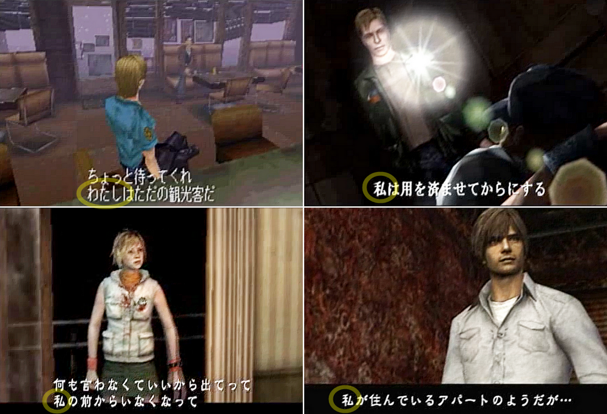
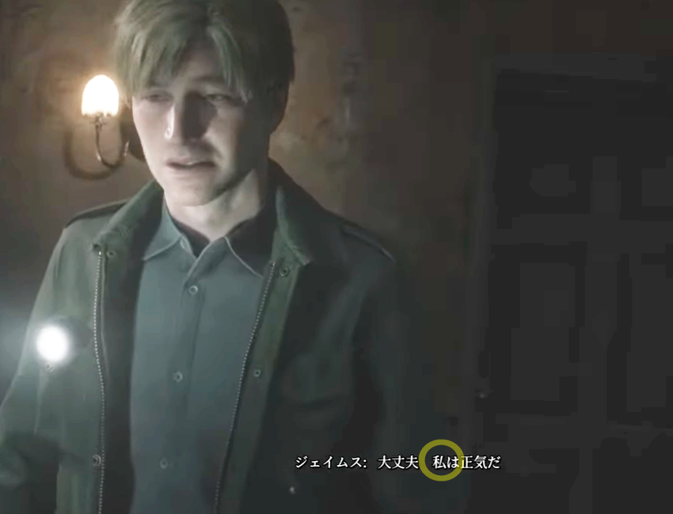
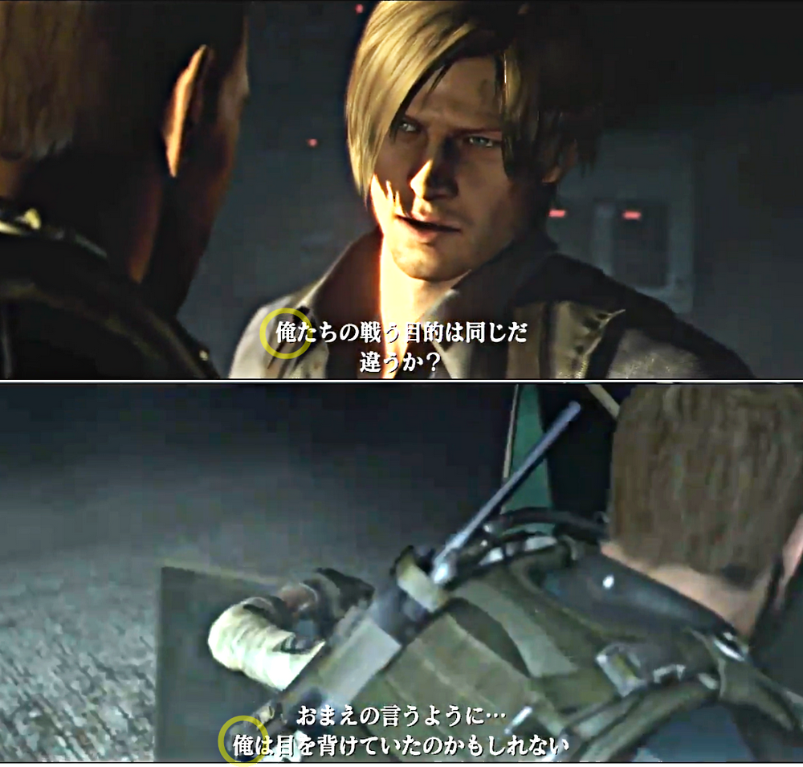
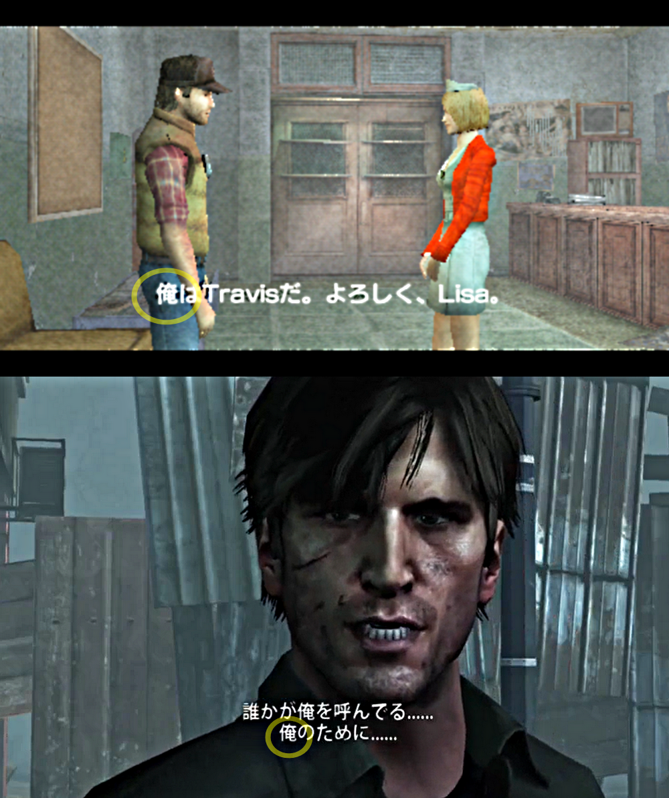
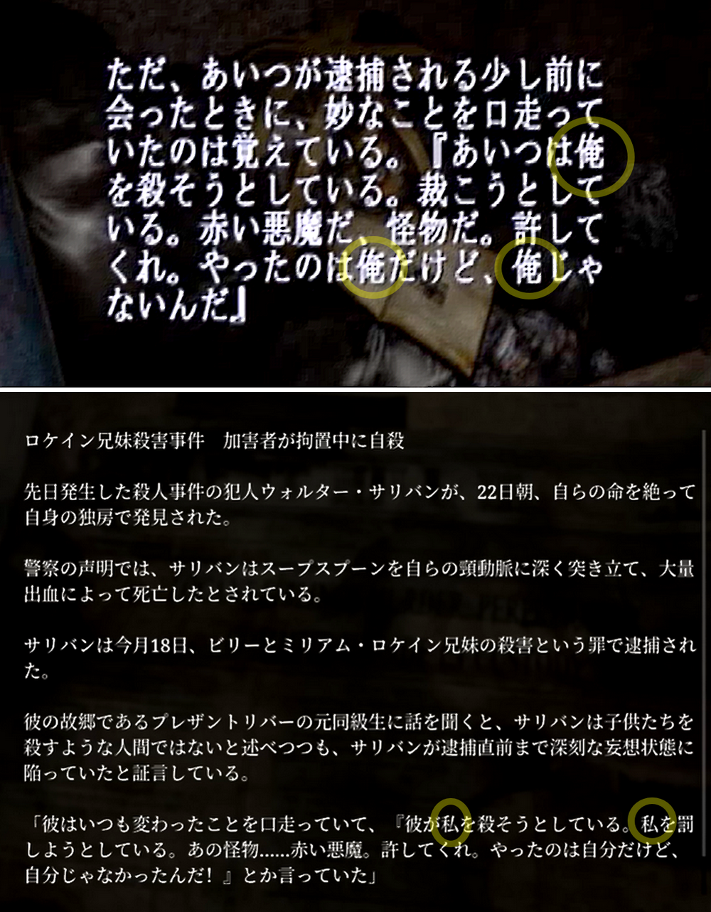
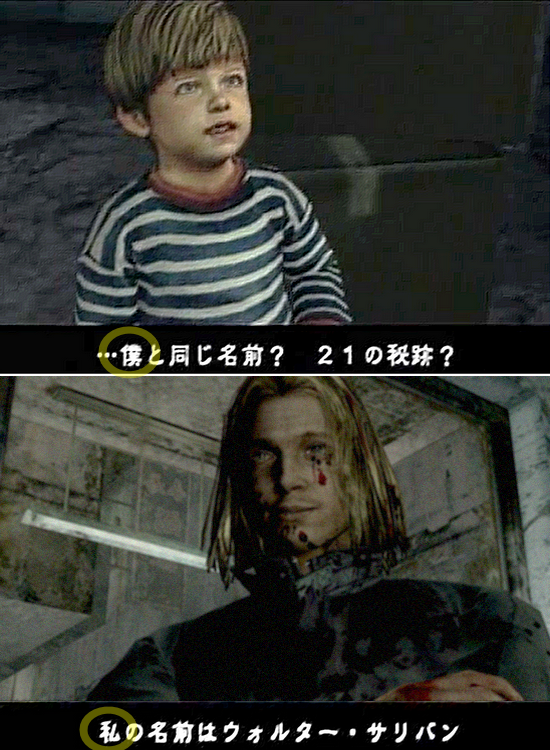

[SH1-SH4] They Speak Formally in Japanese

First-Person Pronouns (Original Japanese Version)
![[SH1-SH4] They Speak Formally in Japanese](img/da30.png)
This is a mirror of the DeviantArt version linked above, provided as a backup and for easier access.

⚠️ This is about Japanese, so skip it if you're not interested.

In Japanese, there are a lot of first-person pronouns for I/my/me, some you'll only see in fiction. Here, I'll briefly cover just three that appear in the Silent Hill series.
私 watashi – general for women, formal/business for men
俺 ore – masculine, strong, casual for men
僕 boku – softer masculine, common for men and boys, occasionally women
In anime, games, and other media, male characters usually go with "ore" or "boku." Action-type guys almost always use "ore." Teacher-like, smart, or bossy characters use "watashi."
Similarly for Japanese titles, in the Resident Evil series, most male characters use "ore."
Wait, Chris and Leon are at work, so shouldn't they be saying watashi!?"
But that wouldn't sound manly or tough, so "ore" fits better.

Personally, I feel "watashi" would work for Wesker and Ethan, but they still use "ore."
Meanwhile, the main characters from SH1 to SH4 in the Silent Hill series use "watashi." It makes sense for Heather because she's female, but male characters using "watashi" is rare and intentional.
They tend to speak more formally, and they are more brains than brawn. In real life, young men rarely use "watashi" outside of business settings. So, it makes them seem more mature and composed than their actual age. Japanese players who are new to Silent Hill usually are surprised, saying, "Oh, they use watashi."
In overseas productions, Travis and Murphy still use "ore" in the Japanese versions too. Well, Travis would fit "ore" better, though.

Also, Walter calls himself "ore" in the SH2 article but switches to "watashi" in SH4. That means the character was properly set and changed. Even the SH2 remake updated the article to reflect the change to "watashi." It's a small point, but it really matters.

Other exceptions: SH2's Eddie uses "ore," and SH4's little Walter uses "boku." Using "watashi" or "ore" for this kid would feel off, so "boku" works better.

……So, after rambling on about Japanese first-person pronouns. But you can see these nuances showing up in other ways too, not just in which pronouns they use. You can spot it even in English.
For example, the protagonists of the Resident Evil series are way too foul-mouthed! The protagonists of the Silent Hill series would never say words like that! Lol.
Eddie, whose first-person pronoun is "ore," uses the word "s*it," but from the others, the worst you'd hear is something like Laura's "You fartface," or Henry's "Damn" or "What the hell." You know, the kind of beautiful English we Japanese learn from textbooks.…Total lie…
These are the differences between "watashi" and "ore," haha.